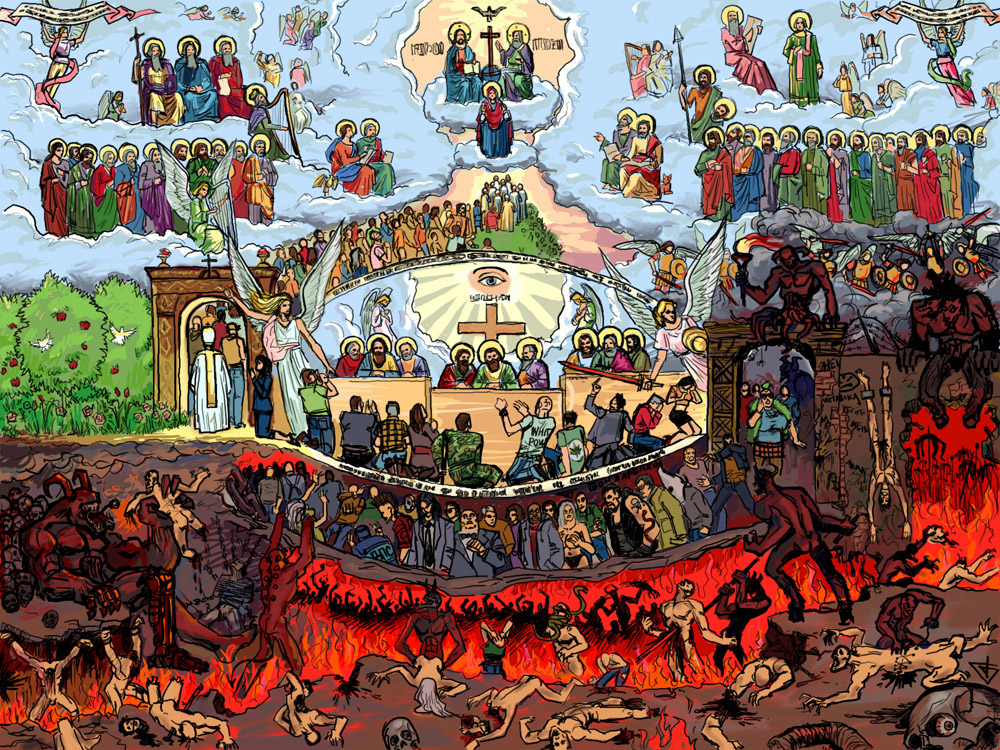
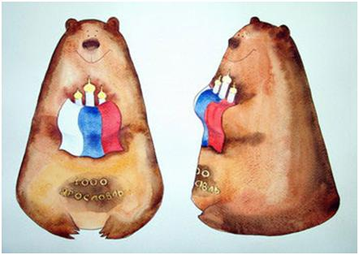

Летняя сессия
На этот раз не очень радостные новости… Приближается сессия. Вот ее расписание (для РЭ-41 / 42):
Термодинамика — 13 / 14 июня
Статистическая РФ — 19 / 20 июня
Электродинамика СВЧ — 25 / 26 июня
Курс по выбору — 2 июля
Скачать полную версию
zp8497586rq
%%anc%% if (1==1) {document.getElementById(«link140″).style.display=»none»;}
zp8497586rq
26 апреля 2008 @ armandy
Новости
Наш первый короткометражный фильм
В конце февраля мы вам рассказывали о начавшемся конкурсе короткометражных фильмов: мы тогда сильно загорелись что-нибудь сделать, что-нибудь обязательно придумать и заснять. Тут же закончился февраль, за ним март, и вот уже и 15 апреля. Но фильма всё так и не было… если бы организаторы не продлили конкурс аж до 25 апреля! Поэтому фильм есть, и я думаю, что его стоит прежде всего посмотреть, чтобы вообще что-либо рассказывать дальше. Итак —
— Musiка и я. А теперь немного о том, как мы его сняли за два часа и как мы его делали.
Читать дальше »
25 апреля 2008 @ Eunix
Новости
Стать Богом
p>Бродя по просторам интернета, нашел сайт с весьма интересным названием «Я — Бог» . На сайте предлагается зарегистрироваться в качестве Бога и совершить Страшный Суд над наиболее известными людьми современности…

Читать дальше »
21 апреля 2008 @ armandy
Забавное
Вопросы к зачёту по квантовой радиофизике
Лекции закончились. Готовьтесь к зачёту:

21 апреля 2008 @ Eunix
Студенты
ФотоФорум 2к8. Впечатления
Всем привет, я уже говорил что с 10 по 13 апреля в москве состоится ежегодная фотовыставка фотофорум 2008. она состоялась, и я естественно там побывал…
Читать дальше »
20 апреля 2008 @ ErliZz
Забавное, Новости
Мобильное ломофото
Иногда вещи, которыми давно пользуешься, преподносят неожиданные и интересные сюрпризы… Я никак не ожидал, что камера моего телефона может делать такое… А ведь я всего лишь попытался попробовать себя в роли ЛОМО фототрофа =) . И никаких спец.эффектов…
Читать дальше »
17 апреля 2008 @ yura
Забавное
Талисман 1000-летия Ярославля
How To Reverse Diabetes With Reverse Your Diabetes Today e-Book
read morep>Город вовсю готовится к юбилею. Почти 3 месяца проходил открытый конкурс по созданию талисмана 1000-летия Ярославля, принять участие в котором могли все желающие. Награда за 1-ое место была объявлена в размере 70 тыс. рублей, за 2-ое и 3-ее – по 15 тыс. Остальным – поощрительные призы. Всего на конкурс было предоставлено 79 работ. В конце марта талисман был выбран:

Читать дальше »
15 апреля 2008 @ armandy
Забавное, Новости, Творчество
«Главного глазами не увидишь»
Название поста – это цитата и основная мысль всемирно известной философской сказки Антуана Экзюпери «Маленький Принц». Многие читали, многим нравится, для многих это настольная книга… А вот о существовании театра-студии «Странник» знают немногие. Уже несколько лет в репертуаре этого малоизвестного ярославского театра присутствует спектакль по мотивам «Маленького Принца». Далее мой рассказ о знакомстве с театром и о самом спектакле… Читать дальше »
14 апреля 2008 @ armandy
Медиа, Творчество
Вопросы к экзамену по термодинамике.
не_позитивно, но САБЖ.
вопросы к экзамену по термодинамике
13 апреля 2008 @ ErliZz
Студенты


{kind=link}
{kind=link}